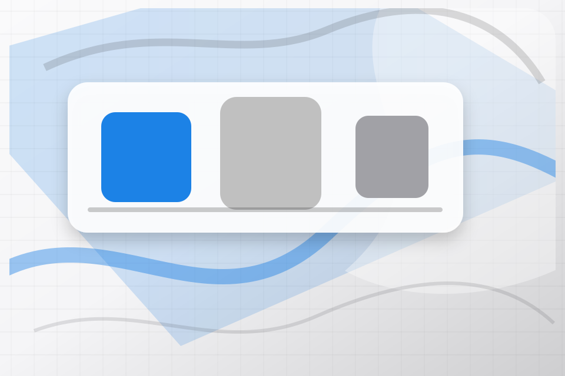
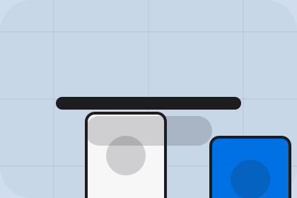

Better State
Promise defines what becomes clearer, easier, or safer when Corner is the chosen route.
Retail
Minimal product store for convenience and offer discovery.

Home / 02
Promise defines the better state Corner is built to create, with enough detail to make the promise believable.
A retail shopfront with clean product shelves, rounded offer cards, service proof, and store-finder CTAs. The section grounds that direction in concrete benefits, visible tradeoffs, and a next route visitors can use when the promise feels relevant.
Open BrandPromise defines what becomes clearer, easier, or safer when Corner is the chosen route.
Home / 03
Featured adds commerce context to the home route, using the minimal product store structure to support convenience and offer discovery before visitors choose a next step.
Corner uses rounded product tiles and focused copy to make the decision easier to scan, aligning the section with convenience and offer discovery rather than filling space.
Open ShopFeatured gives the page a specific angle instead of repeating the navigation label.
The rounded product tiles show what to compare, what to avoid, and what matters most for retail, shops & consumer sales visitors.
The final cue points to a useful internal route so the section keeps the journey moving.
Home / 04
Categories adds commerce context to the home route, using the minimal product store structure to support convenience and offer discovery before visitors choose a next step.
Corner uses rounded product tiles and focused copy to make the decision easier to scan, aligning the section with convenience and offer discovery rather than filling space.
Open ProductsCategories gives the page a specific angle instead of repeating the navigation label.
The rounded product tiles show what to compare, what to avoid, and what matters most for retail, shops & consumer sales visitors.
The final cue points to a useful internal route so the section keeps the journey moving.
Home / 05
Offers defines the better state Corner is built to create, with enough detail to make the promise believable.
A retail shopfront with clean product shelves, rounded offer cards, service proof, and store-finder CTAs. The section grounds that direction in concrete benefits, visible tradeoffs, and a next route visitors can use when the promise feels relevant.
Open OffersCorner structures offers around better state, practical gain, and a clear next route so visitors can compare the block quickly before they visit the shop.
Visit ShopHome / 06
Stores adds commerce context to the home route, using the minimal product store structure to support convenience and offer discovery before visitors choose a next step.
Corner uses rounded product tiles and focused copy to make the decision easier to scan, aligning the section with convenience and offer discovery rather than filling space.
Open StoresStores gives the page a specific angle instead of repeating the navigation label.

The rounded product tiles show what to compare, what to avoid, and what matters most for retail, shops & consumer sales visitors.

The final cue points to a useful internal route so the section keeps the journey moving.
Home / 07
Reviews converts customer proof into a useful buying signal: the problem, the experience, and what changed afterward.
Proof stays believable by focusing on situation, service experience, and practical change rather than vague praise or unsupported results.
Open LoyaltyWhat the visitor needed before choosing Corner, written with enough context to feel real.
How the service, product, or support felt during the process, not just that it was good.
What became easier to decide, complete, buy, book, or trust after the interaction.
Home / 08
Story adds commerce context to the home route, using the minimal product store structure to support convenience and offer discovery before visitors choose a next step.
Corner uses rounded product tiles and focused copy to make the decision easier to scan, aligning the section with convenience and offer discovery rather than filling space.
Open BrandStory gives the page a specific angle instead of repeating the navigation label.
The rounded product tiles show what to compare, what to avoid, and what matters most for retail, shops & consumer sales visitors.
The final cue points to a useful internal route so the section keeps the journey moving.
Home / 09
Questions handles buying doubts directly so visitors can understand timing, fit, limits, and the safest next step.
Answers are short by design: enough to remove hesitation, not so much that the page turns into documentation before the visitor can act.
Open ContactQuestions gives the page a specific angle instead of repeating the navigation label.
The rounded product tiles show what to compare, what to avoid, and what matters most for retail, shops & consumer sales visitors.
The final cue points to a useful internal route so the section keeps the journey moving.
Corner starts with a focused intake so the recommendation matches the visitor's context, risk, timing, and readiness.
Each route explains inclusions, exclusions, documents, timing, and the decision points that affect final delivery.
The theme uses minimal product store, rounded product tiles, and product/category filter, loyalty signup, store finder rather than a shared template rhythm.
Soft product shelf hero
Select the closest route and Corner keeps the next step, proof, and follow-up expectation aligned with convenience and offer discovery.
Home / 10
Corner closes the home route with a clear action, a quick reminder of the value, and a low-friction way to visit the shop.
Visitors who are ready can use the primary action. Visitors who are still comparing can scan the section links, proof, and support routes before they visit the shop.
Visit ShopThe final block keeps the choice simple: act now, compare one more proof route, or send enough detail for a focused response.
Visit Shopconvenience and offer discovery
A retail shopfront with clean product shelves, rounded offer cards, service proof, and store-finder CTAs. Home ends with a direct path to visit the shop, plus enough context for visitors who still need to compare.

Visit Shop